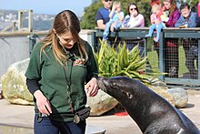
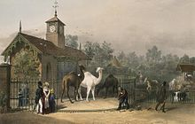
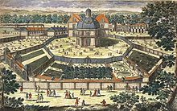
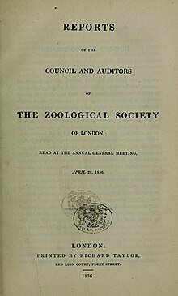
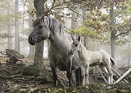

A zoo (short for zoological garden; also called an animal park or menagerie) is a facility in which animals are kept within enclosures for public exhibition and often bred for conservation purposes.[1] The term zoological garden refers to zoology, the study of animals. The term is derived from the Greek ζώον, zoon, 'animal', and the suffix -λογία, -logia, 'study of'. The abbreviation zoo was first used of the London Zoological Gardens, which was opened for scientific study in 1828, and to the public in 1847.[2] The first modern zoo was the Tierpark Hagenbeck by Carl Hagenbeck in Germany. In the United States alone, zoos are visited by over 181 million people annually.[3]
Etymology
The London Zoo, which was opened in 1828, was initially known as the "Gardens and Menagerie of the Zoological Society of London", and it described itself as a menagerie or "zoological forest".[4] The abbreviation "zoo" first appeared in print in the United Kingdom around 1847, when it was used for the Clifton Zoo, but it was not until some 20 years later that the shortened form became popular in the rhyming song "Walking in the Zoo" by music-hall artist Alfred Vance.[4] The term "zoological park" was used for more expansive facilities in Halifax, Nova Scotia, Washington, D.C., and the Bronx in New York, which opened in 1847, 1891 and 1899 respectively.[5] Relatively new terms for zoos in the late 20th century are "conservation park" or "bio park". Adopting a new name is a strategy used by some zoo professionals to distance their institutions from the stereotypical and nowadays criticized zoo concept of the 19th century.[6] The term "bio park" was first coined and developed by the National Zoo in Washington D.C. in the late 1980s.[7] In 1993, the New York Zoological Society changed its name to the Wildlife Conservation Society and re branded the zoos under its jurisdiction as "wildlife conservation parks".[8]
history
he predecessor of the zoological garden is the menagerie, which has a long history from the ancient world to modern times. The oldest known zoological collection was revealed during excavations at Hierakonpolis, Egypt in 2009, of a c. 3500 BCE menagerie. The exotic animals included hippopotami, hartebeest, elephants, baboons and wildcats.[9] King Ashur-bel-kala of the Middle Assyrian Empire created zoological and botanical gardens in the 11th century BCE. In the 2nd century BCE, the Chinese Empress Tanki had a "house of deer" built, and King Wen of Zhou kept a 1,500-acre (6.1 km2) zoo called Ling-Yu, or the Garden of Intelligence. Other well-known collectors of animals included King Solomon of the Kingdom of Israel and Judah, Queen Semiramis and King Ashurbanipal of Assyria, and King Nebuchadnezzar of Babylonia.[10] By the 4th century BCE, zoos existed in most of the Greek city states; Alexander the Great is known to have sent animals that he found on his military expeditions back to Greece. The Roman emperors kept private collections of animals for study or for use in the arena,[10] the latter faring notoriously poorly. The 19th-century historian W. E. H. Lecky wrote of the Roman games, first held in 366 BCE: At one time, a bear and a bull, chained together, rolled in fierce combat across the sand ... Four hundred bears were killed in a single day under Caligula ... Under Nero, four hundred tigers fought with bulls and elephants. In a single day, at the dedication of the Colosseum by Titus, five thousand animals perished. Under Trajan ... lions, tigers, elephants, rhinoceroses, hippopotami, giraffes, bulls, stags, even crocodiles and serpents were employed to give novelty to the spectacle.[11] Charlemagne had an elephant named Abul-Abbas that was given to him by the Abbasid caliph. King Henry I of England kept a collection of animals at his palace in Woodstock which reportedly included lions, leopards, and camels.[12] The most prominent collection in medieval England was in the Tower of London, created as early as 1204 by King John I. Henry III received a wedding gift in 1235 of three leopards from Frederick II, Holy Roman Emperor, and in 1264, the animals were moved to the Bulwark, renamed the Lion Tower, near the main western entrance of the Tower. It was opened to the public during the reign of Elizabeth I in the 16th century.[13] During the 18th century, the price of admission was three half-pence, or the supply of a cat or dog for feeding to the lions.[12] The animals were moved to the London Zoo when it opened. Aztec emperor Moctezuma had in his capital city of Tenochtitlan a "house of animals" with a large collection of birds, mammals and reptiles in a garden tended by more than 600 employees. The garden was described by several Spanish conquerors, including Hernán Cortés in 1520. After the Aztec revolt against the Spanish rule, and during the subsequent battle for the city, Cortés reluctantly ordered the zoo to be destroyed.[14]
Further information: List of zoos by country The oldest zoo in the world still in existence is the Tiergarten Schönbrunn in Vienna, Austria. It was constructed by Adrian van Stekhoven in 1752 at the order of Emperor Francis I, to serve as an imperial menagerie as part of Schönbrunn Palace. The menagerie was initially reserved for the viewing pleasure of the imperial family and the court, but was made accessible to the public in 1765.[15] In 1775, a zoo was founded in Madrid, and in 1795, the zoo inside the Jardin des Plantes in Paris was founded by Jacques-Henri Bernardin, with animals from the royal menagerie at Versailles, primarily for scientific research and education. The planning about a space for the conservation and observation of animals was expressed in connection with the political construction of republican citizenship.[16]
Until the early 19th century, the function of the zoo was often to symbolize royal power, like King Louis XIV's menagerie at Versailles. Major cities in Europe set up zoos in the 19th century, usually using London and Paris as models. The transition was made from princely menageries designed to entertain high society with strange novelties into public zoological gardens. The new goal was to educate the entire population with information along modern scientific lines. Zoos were supported by local commercial or scientific societies.
he modern zoo that emerged in the 19th century in the United Kingdom,[17] was focused on providing scientific study and later educational exhibits to the public for entertainment and inspiration.[18] A growing fascination for natural history and zoology, coupled with the tremendous expansion in the urbanization of London, led to a heightened demand for a greater variety of public forms of entertainment to be made available. The need for public entertainment, as well as the requirements of scholarly research, came together in the founding of the first modern zoos. Whipsnade Park Zoo in Bedfordshire, England, opened in 1931. It allowed visitors to drive through the enclosures and come into close proximity with the animals. The Zoological Society of London was founded in 1826 by Stamford Raffles and established the London Zoo in Regent's Park two years later in 1828.[19] At its founding, it was the world's first scientific zoo.[10][20] Originally intended to be used as a collection for scientific study, it was opened to the public in 1847.[20] The Zoo was located in Regent's Park—then undergoing development at the hands of the architect John Nash. What set the London zoo apart from its predecessors was its focus on society at large. The zoo was established in the middle of a city for the public, and its layout was designed to cater for the large London population. The London zoo was widely copied as the archetype of the public city zoo.[21] In 1853, the Zoo opened the world's first public aquarium. Dublin Zoo was opened in 1831 by members of the medical profession interested in studying animals while they were alive and more particularly getting hold of them when they were dead.[22] Downs' Zoological Gardens created by Andrew Downs and opened to the Nova Scotia public in 1847. It was originally intended to be used as a collection for scientific study. By the early 1860s, the zoo grounds covered 40 hectares with many fine flowers and ornamental trees, picnic areas, statues, walking paths, The Glass House (which contained a greenhouse with an aviary, aquarium, and museum of stuffed animals and birds), a pond, a bridge over a waterfall, an artificial lake with a fountain, a wood-ornamented greenhouse, a forest area, and enclosures and buildings.[23][24][25] The first zoological garden in Australia was Melbourne Zoo in 1860.
In German states leading roles came Berlin (1841), Frankfurt (1856), and Hamburg (1863). In 1907, the entrepreneur Carl Hagenbeck founded the Tierpark Hagenbeck in Stellingen, now a quarter of Hamburg. His zoo was a radical departure from the layout of the zoo that had been established in 1828. It was the first zoo to use open enclosures surrounded by moats, rather than barred cages, to better approximate animals' natural environments.[26] He also set up mixed-species exhibits and based the layout on the different organizing principle of geography, as opposed to taxonomy.[27]
